I am a Postdoctoral Researcher at McGill University, working with Prof. Yue Li. Prior to joining McGill, I received my PhD in Information Technology from Deakin University under the supervision of Dr. Atul Sajjanhar and Prof. Yong Xiang.
My research focuses on Distributed AI, Agentic AI, Trustworthy AI, and AI for Healthcare. In particular, I am interested in federated learning, collaborative intelligence, multi-agent systems, secure machine learning, and privacy-preserving AI. My work aims to bridge theoretical advances and real-world deployment of intelligent systems in large-scale and data-sensitive environments.
My long-term vision is to develop trustworthy and collaborative AI systems that can learn, reason, and adapt across distributed environments while preserving privacy, reliability, and human values. I believe the next generation of AI will emerge from the integration of foundation models, agentic intelligence, and distributed learning.
I actively welcome collaborations with researchers, industry partners, healthcare organizations, and prospective students who share interests in next-generation AI systems. Please feel free to reach out if you are interested in collaboration, research opportunities, or academic exchange.
🔥 News
- 2026.08: 🎉🎉 I was invited to serve as the reviewer for ICLR 2027.
- 2026.07: 🎉🎉 I was invited to serve on the AAAI 2027 program committee.
- 2026.06: 🎉🎉 I was invited to serve as an Area Chair (Meta Reviewer) for IJCNN 2027.
- 2026.06: 🎉🎉 One first-author paper was accepted by Pattern Recognition.
📝 Publications
† Equal contribution * Corresponding author
2026
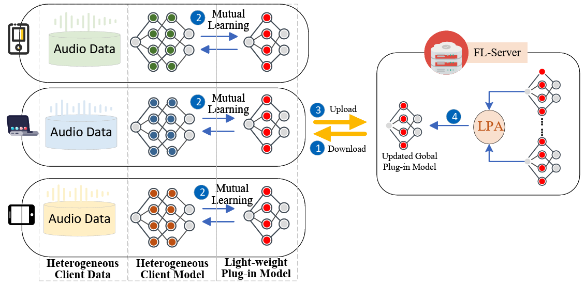
FedMLAC: Mutual Learning Driven Heterogeneous Federated Audio Classification
Pattern Recognition, 2026.
Jun Bai, Rajib Rana, Di Wu, Youyang Qu, Xiaohui Tao, Ji Zhang, Carlos Busso, Shivakumara Palaiahnakote
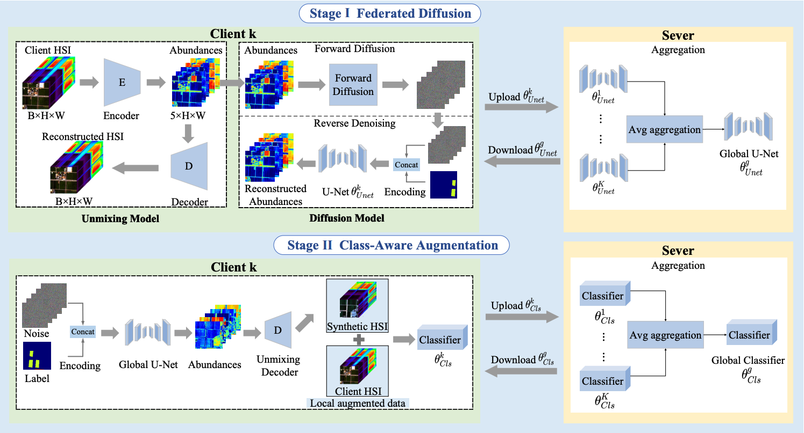
FedDA-HSI: Federated Class-Aware Framework for Hyperspectral Image Classification with Diffusion Augmentation
IEEE Transactions on Geoscience and Remote Sensing, 2026.
Weixia Yang, Di Wu, Jun Bai, Jing Wang, Shenghui Rong, Jun Zhou
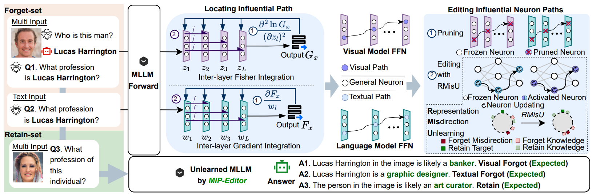
Cross-Modal Unlearning via Influential Neuron Path Editing in Multimodal Large Language Models
Proceedings of the Fortieth AAAI Conference on Artificial Intelligence (AAAI 2026), 2026.
Kunhao Li, Wenhao Li, Di Wu, Lei Yang, Jun Bai, Ju Jia, Jason Xue
Oral Paper
2025
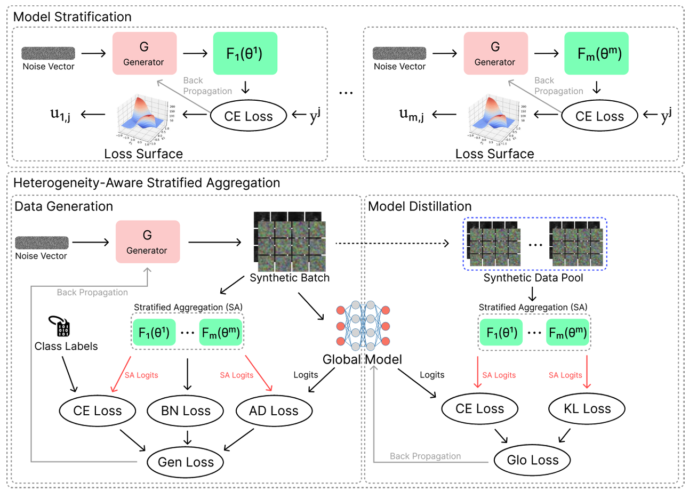
A Unified Solution to Diverse Heterogeneities in One-Shot Federated Learning
Proceedings of the 31st ACM SIGKDD Conference on Knowledge Discovery and Data Mining (KDD 2025), pp. 71–82, 2025.
Jun Bai†*,, Yiliao Song†, Di Wu†, Atul Sajjanhar, Yong Xiang, Wei Zhou, Xiaohui Tao, Yan Li, Yue Li*
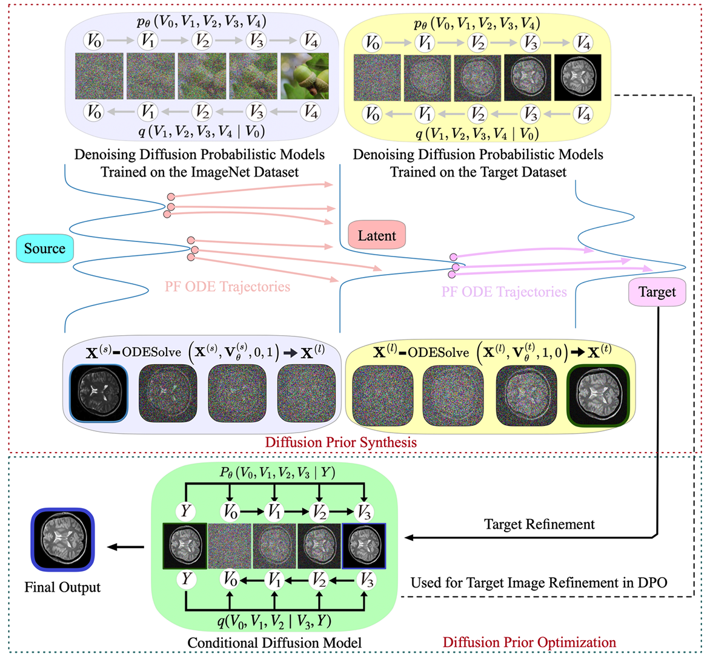
Source-Free Cross-modality Medical Image Synthesis with Diffusion Priors
Journal of King Saud University - Computer and Information Sciences, 37(8), 214, 2025.
Jia Chen†, Xin Wang†, Jun Bai†*,, Kai Yang, Xinrong Hu, Yue Li
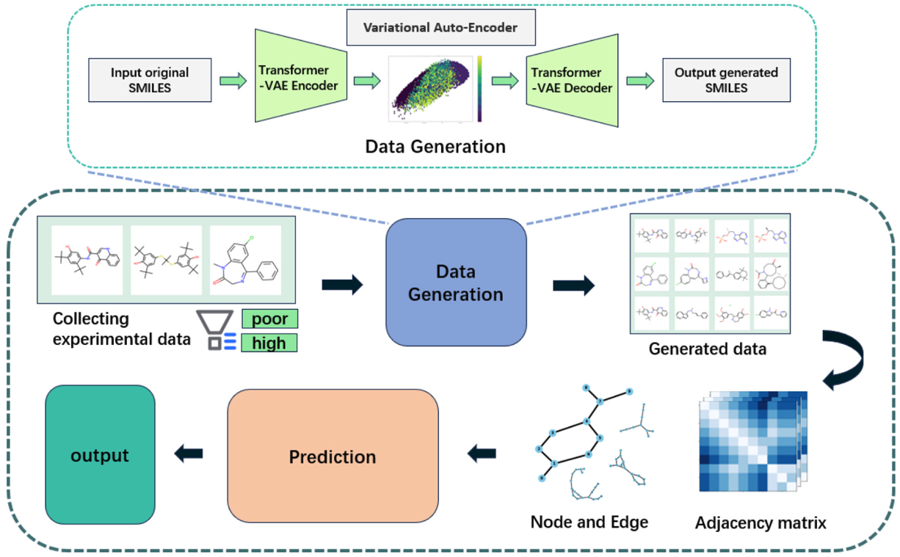
Predicting lymphatic transport potential using graph transformer based on limited historical data from in vivo studies
Journal of Controlled Release, 384, 113847, 2025.
Yunfeng Li, Ruiya Liu, Zonghao Ji, Li Gao, Xiaolu Wang, Jiazhi Zhang, Luojuan Hu, Youyang Qu, Jun Bai, Di Wu, Sifei Han
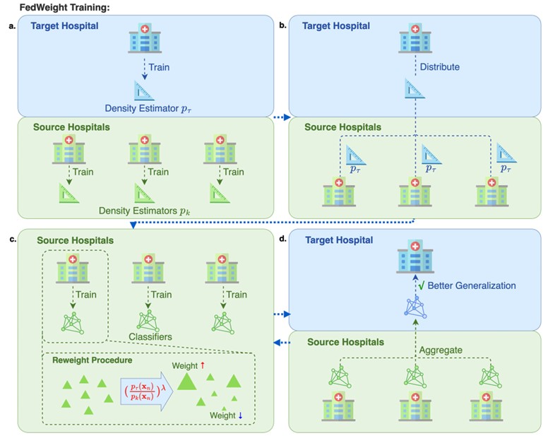
FedWeight: mitigating covariate shift of federated learning on electronic health records data through patients re-weighting
npj Digital Medicine, 8, 286, 2025.
He Zhu, Jun Bai, Na Li, Xiaoxiao Li, Dianbo Liu, David L. Buckeridge, Yue Li
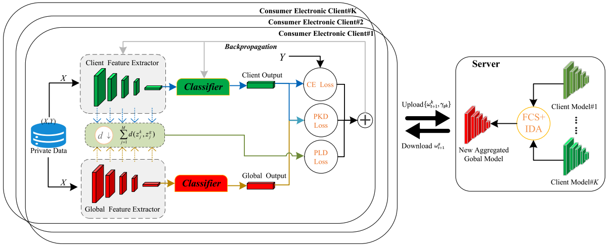
Non-IID Free Federated Learning with Fuzzy Optimization for Consumer Electronics Systems
IEEE Transactions on Consumer Electronics, 72(2), 7032–7044, 2025.
Jun Bai, Di Wu, Shan Zeng, Yao Zhao, Youyang Qu, Shui Yu
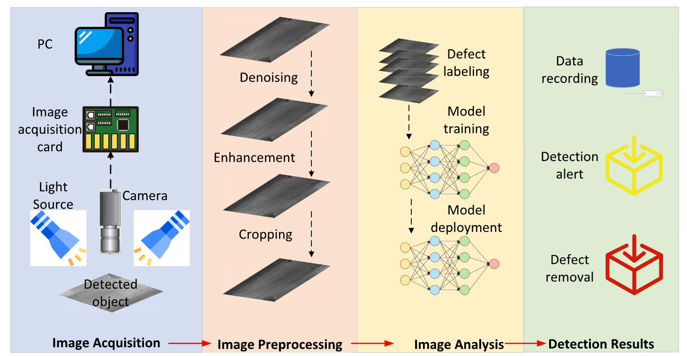
A Comprehensive Survey on Machine Learning Driven Material Defect Detection
ACM Computing Surveys, 57(11), 1–36, 2025.
Jun Bai, Di Wu, Tristan Shelley, Peter Schubel, David Twine, John Russell, Xuesen Zeng, Ji Zhang
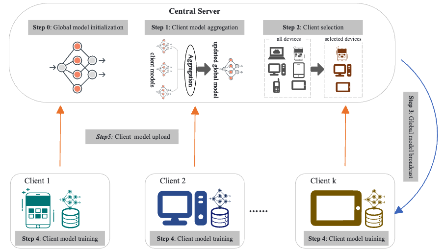
A Systematic Literature Review of Robust Federated Learning: Issues, Solutions, and Future Research Directions
ACM Computing Surveys, 25(10), 245, 2025.
Md Palash Uddin, Yong Xiang, Mahmudul Hasan, Jun Bai, Yao Zhao, Longxiang Gao
2024
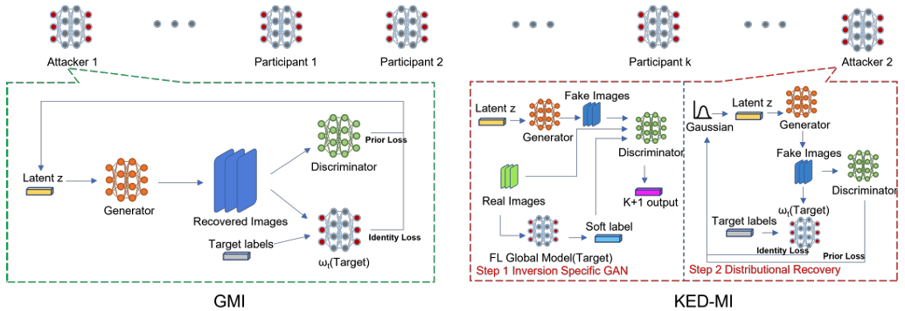
FedInverse: Evaluating Privacy Leakage in Federated Learning
International Conference on Learning Representations (ICLR), 2024.
Di Wu†, Jun Bai†, Yiliao Song†, Junjun Chen, Wei Zhou, Yong Xiang, Atul Sajjanhar
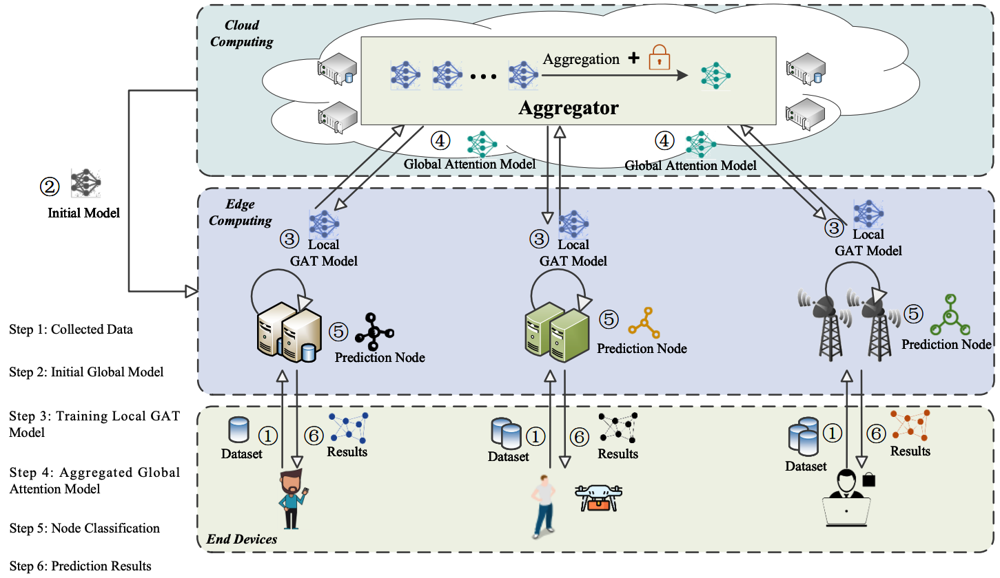
Addressing Non-IID Data in Federated Learning with Dual Attention Mechanism for Edge Computing Applications
IEEE Smart World Congress (SWC), pp. 1005–1012, 2024.
Chong Zhang, Aiting Yao, Jun Bai, Youyang Qu, Azadeh Ghari Neiat, Xiao Liu
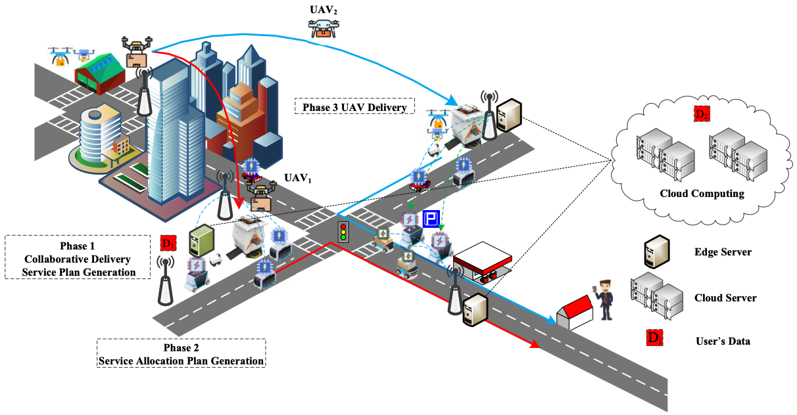
Fed4UL: A Cloud–Edge–End Collaborative Federated Learning Framework for Addressing the Non-IID Data Issue in UAV Logistics
Drones, 8(7), 312, 2024.
Chong Zhang, Xiao Liu, Aiting Yao, Jun Bai, Chengzu Dong, Shantanu Pal, Frank Jiang
2023
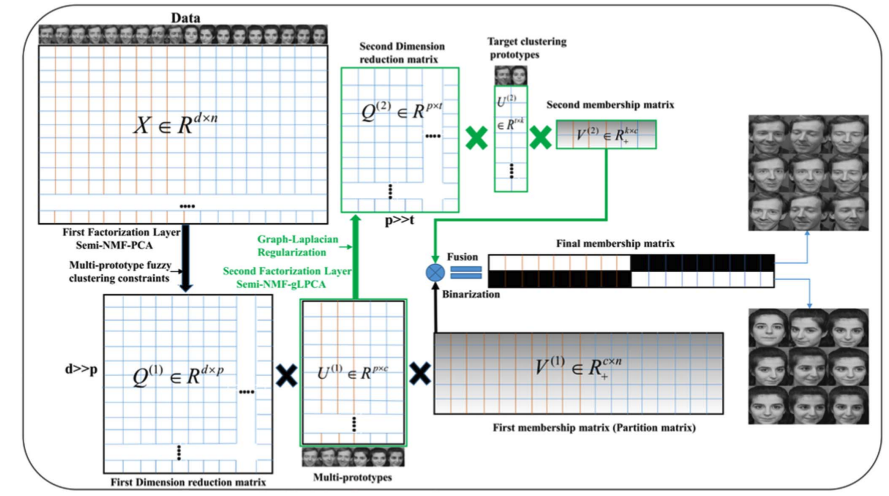
Soft Multi-Prototype Clustering Algorithm Via Two-Layer Semi-NMF
IEEE Transactions on Fuzzy Systems, 32(4), 1615–1629, 2023.
Shan Zeng, Xiangjun Duan, Jun Bai, Wei Tao, Kun Hu, Yuanyan Tang
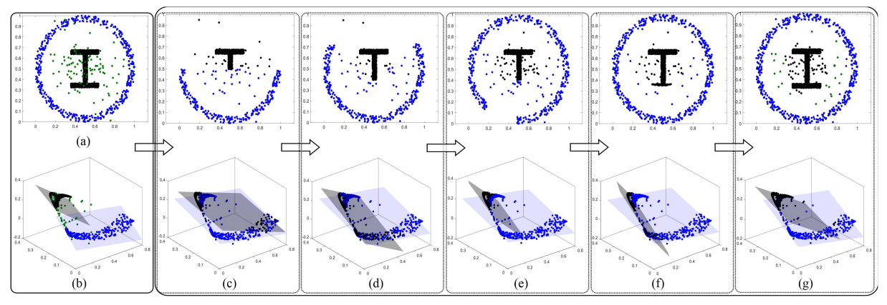
A Sparse Framework for Robust Possibilistic K-Subspace Clustering
IEEE Transactions on Fuzzy Systems, 31(4), 1124–1138, 2022.
Shan Zeng, Xiangjun Duan, Hao Li, Jun Bai, Yuanyan Tang, Zhiyong Wang
2022
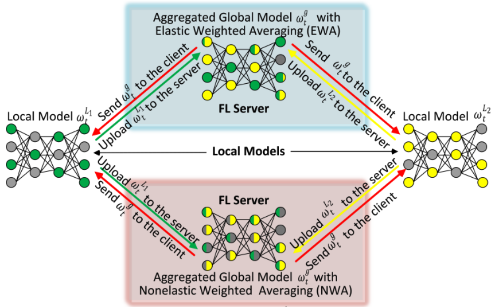
FedEWA: Federated Learning with Elastic Weighted Averaging
International Joint Conference on Neural Networks (IJCNN), pp. 1–8, 2022.
Jun Bai, Atul Sajjanhar, Yong Xiang, Xiaojun Tong, Shan Zeng
💼 Experience
-
Postdoctoral Researcher
McGill University, Montreal, Canada · 2025 – Present
Supervisor: Prof. Yue Li
🎓 Educations
-
PhD in Information Technology
Deakin University, Melbourne, Australia · 2020 – 2024
Supervisors: Dr. Atul Sajjanhar and Prof. Yong Xiang
🤝 Service
🎯 Conference Leadership and Organization
-
Area Chair (Meta Reviewer), International Joint Conference on Neural Networks (IJCNN 2027)
Cape Town, South Africa, 2027. -
Co-organiser, IJCNN 2026 Special Session on Trustworthy and Explainable Federated Learning: Towards a Secure and Privacy-Preserving Future
Maastricht, the Netherlands, 2026. -
Co-organiser, IJCNN 2025 Special Session on Trustworthy and Explainable Federated Learning: Towards a Secure and Privacy-Preserving Future
Rome, Italy, 2025.
✏️ Editorial Activities
-
Guest Editor, Journal of Information and Intelligence
Special Issue on Emerging Frontiers in Physical and Embodied Artificial Intelligence, 2026. -
Guest Editor, CMC-Computers, Materials & Continua
Special Issue on Advanced Object Detection and Visual Understanding in Intelligent Systems, 2026.
🔍 Reviewing Activities
Conference Reviewing
- International Conference on Machine Learning (ICML 2026, 2027)
- International Conference on Learning Representations (ICLR 2024, 2025, 2026)
- AAAI Conference on Artificial Intelligence (AAAI 2025, 2026, 2027)
- Conference on Neural Information Processing Systems (NeurIPS 2025, 2026, 2027)
- IEEE/CVF Conference on Computer Vision and Pattern Recognition (CVPR 2024, 2025)
- ACM SIGKDD Conference on Knowledge Discovery and Data Mining (KDD 2024, 2025, 2026)
- ACM International Conference on Multimedia (ACM MM 2024)
- European Conference on Computer Vision (ECCV 2026)
Journal Reviewing
- IEEE Transactions on Pattern Analysis and Machine Intelligence
- IEEE Transactions on Mobile Computing
- IEEE Transactions on Information Forensics and Security
- IEEE Transactions on Dependable and Secure Computing
- International Journal of Computer Vision
- IEEE Transactions on Knowledge and Data Engineering
- Neural Networks
- Pattern Recognition
- Information Sciences
- Knowledge-Based Systems
- IEEE Journal of Biomedical and Health Informatics
Thesis Reviewing
- External Examiner, BSc (Honours) Thesis, University of Southern Queensland, 2026.
🎙️ Invited Talks
🎖 Honors and Awards
-
🏆 Gold Reviewer, International Conference on Machine Learning (ICML 2026), recognised for outstanding reviewing contributions and high-quality reviews.
-
🥇 First Prize, Australian AI Awards 2024, recognised for outstanding achievement in AI-based composite material defect detection and system deployment.